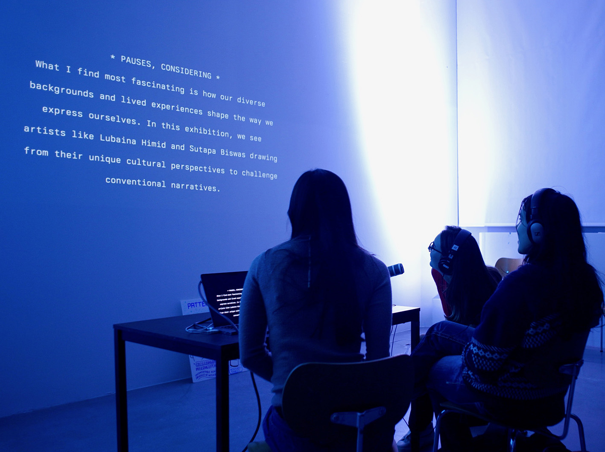

Electronic Life is a collective working with the advances of artificial intelligence for the social good.
It was founded by Sunil Manghani, Ed D'Souza, and Tom Savage, following a foundational principle of 'Rigorous Creativity': a framework demanding the disciplined application of analytical methods in tandem with creative practice.
Electronic Life provides consultancy and public programming, which draws upon the work of its Research Studio co-directed by Professors Ed D'Souza and Sunil Manghani. Working at the intersection of art, design, and science, we collaborate with major international partners including Tate Britain, The Alan Turing Institute, Kochi-Muziris Biennale, and OP Jindal Global University to develop people-centred AI practices that address global challenges through equitable and inclusive approaches.
Our applied research creates real-world impact through community-led AI tools, decolonising methodologies, and participatory frameworks that democratise access to emerging technologies. Pioneering the future of learning through progressive integration of AI with human-centred pedagogies, we balance technological innovation with collaborative, culturally-responsive approaches. Working with an international network of technologists, programmers, engineers, and researchers, we translate cutting-edge technical capabilities into meaningful social and cultural applications. From co-creating AI systems with marginalised communities in London to building culturally-responsive heritage platforms in India, our projects span continents and disciplines, consistently centring diverse voices while addressing UN Sustainable Development Goals through innovative technological solutions.
Committed to both making impactful work and contributing to the intellectual and critical dialogues that emerge around AI and society, we advance theoretical understanding alongside practical applications. Supported by research funding from major funding councils and commissioned projects from leading cultural institutions, we work with a diverse network of universities, cultural foundations, and community organisations to demonstrate how critical arts practice can reshape AI development to serve social good, environmental sustainability, and cultural equity through engaged, community-minded approaches on an international scale.